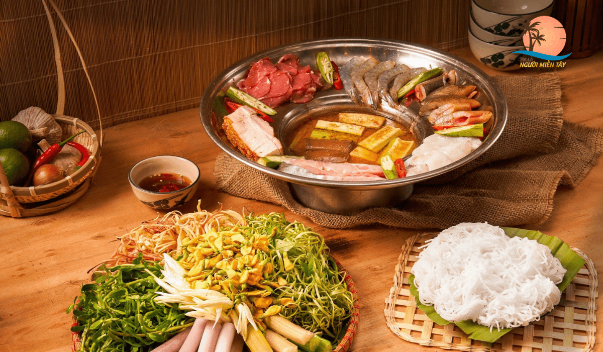
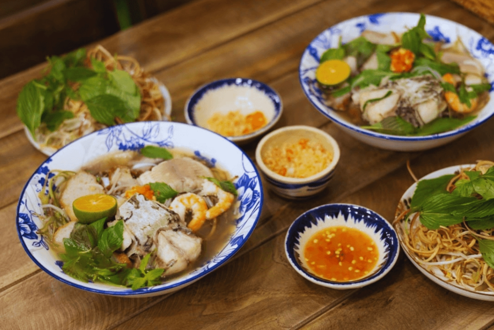
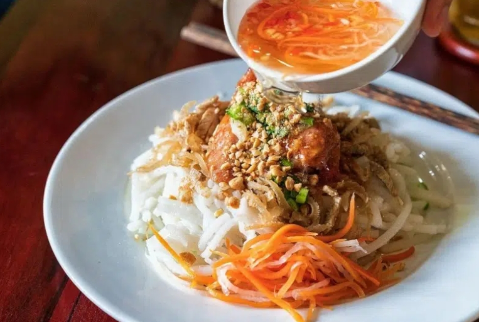
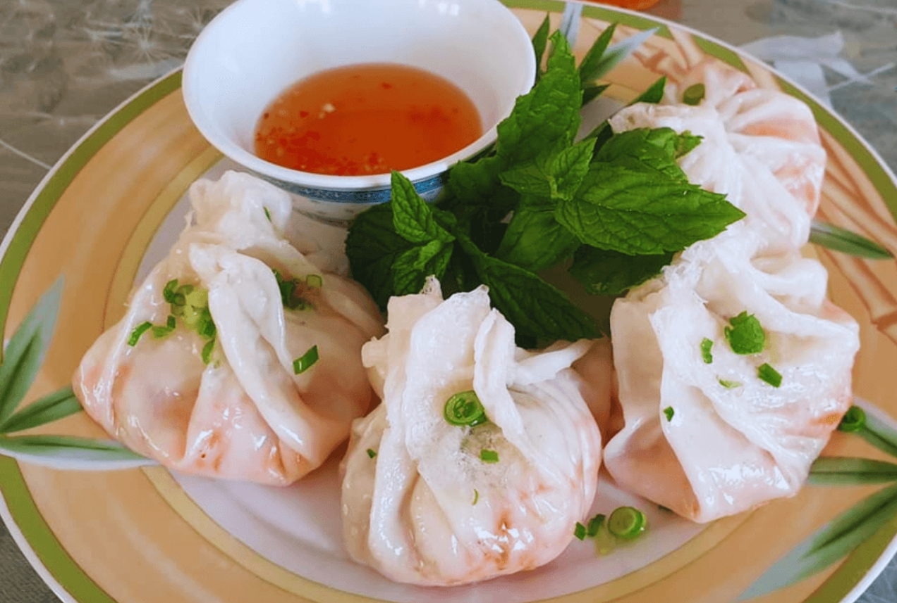
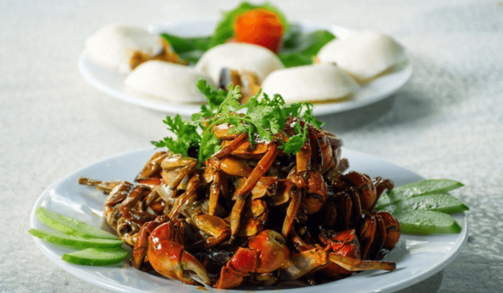
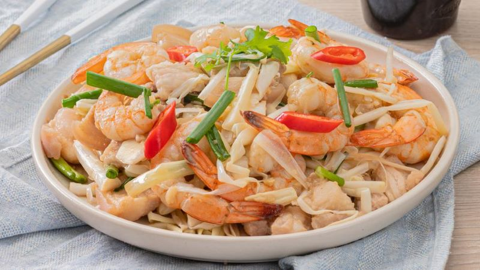
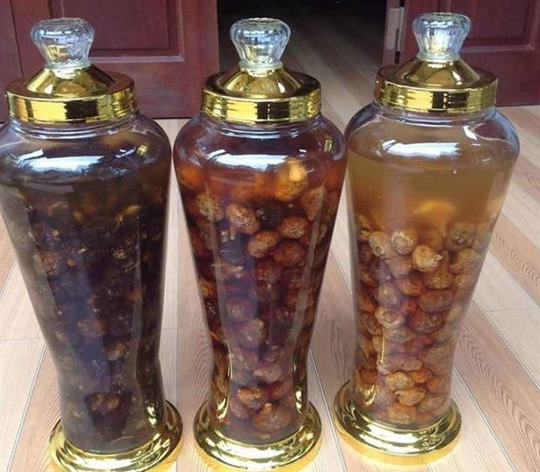
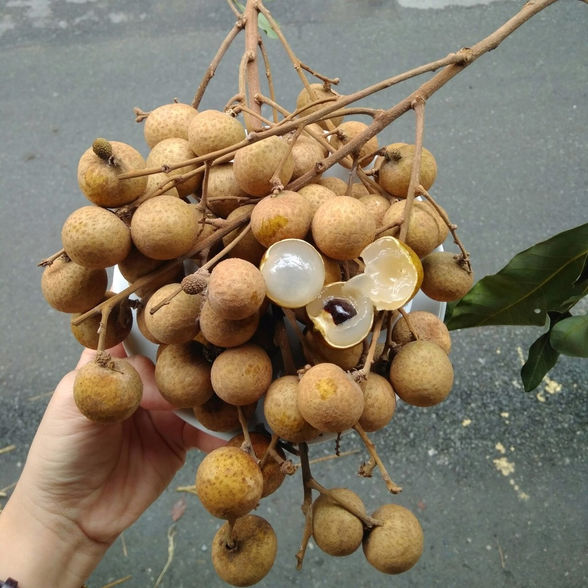
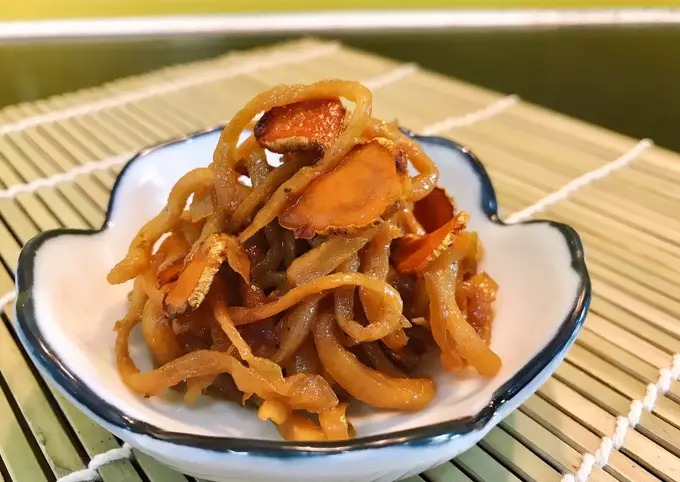
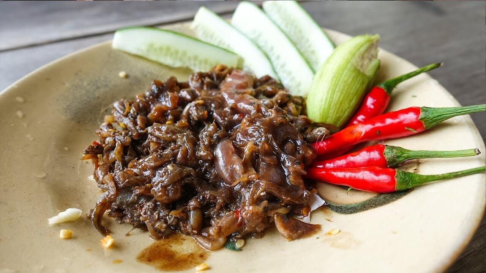

Sự kết tinh ẩm thực miền Tây với nước dùng đậm đà từ mắm cá sặc hoặc cá linh, ăn kèm vô số loại rau đồng và hải sản tươi sống.

Món ăn đậm đà nét văn hóa Khmer với nước dùng nấu từ mắm bò hóc, thơm mùi ngải bún, ăn kèm cá lóc, tôm tươi và thịt heo quay giòn rụm.

Món ăn đậm chất quê với sợi bánh tằm xốp mềm làm từ bột gạo, kết hợp cùng xíu mại, bì heo, rau sống và nước cốt dừa béo ngậy.

Món bánh độc đáo có lớp vỏ mỏng dai ôm trọn nhân tôm, thịt, củ sắn và củ cải, chấm cùng nước mắm chua ngọt tạo nên hương vị khó quên.

Sự kết hợp hoàn hảo giữa vị chua chua của me, vị chua cay mặn ngọt thấm đượm vào từng thớ thịt ba khía chắc nịch.

Món dưa chua làm từ đọt bồn bồn tươi trộn cùng tôm, thịt, chút rau răm và đậu phụng, mang lại vị giòn sần sật cực kỳ giải ngấy.

Lựa chọn hoàn hảo làm quà biếu, được ngâm từ nhãn khô cùng các vị thuốc bắc, mang đến hương vị nồng nã, đậm đà và tốt cho sức khỏe.

Giống nhãn đặc sản nổi tiếng với vỏ vàng óng, cơm dày, hạt nhỏ cùng vị ngọt thanh và hương thơm đặc trưng.

Củ cải trắng ướp muối phơi khô, ngọt nhẹ và giòn sần sật – món ăn kèm giản dị nhưng cực kỳ bắt miệng.

Đặc sản tâm linh xứ Vĩnh Hưng với vị chua dịu nhẹ, mặn mòi, thường dùng làm nước chấm hoặc ăn kèm thịt luộc, rau sống.